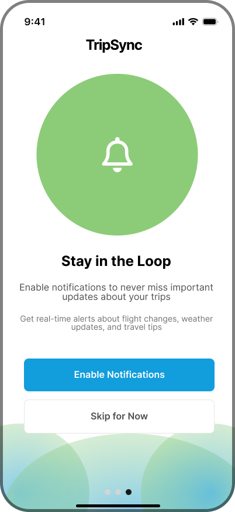
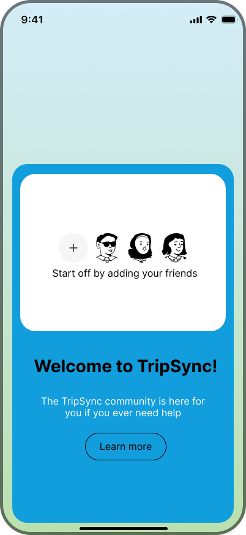
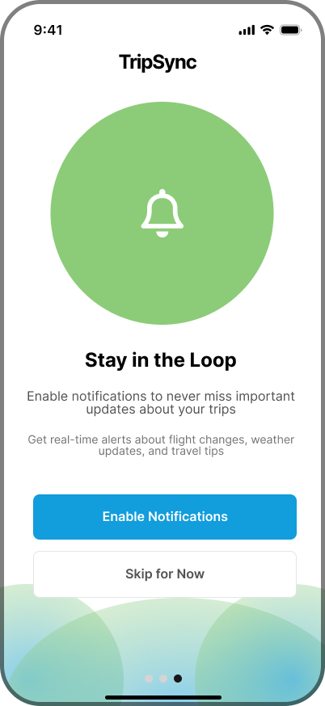
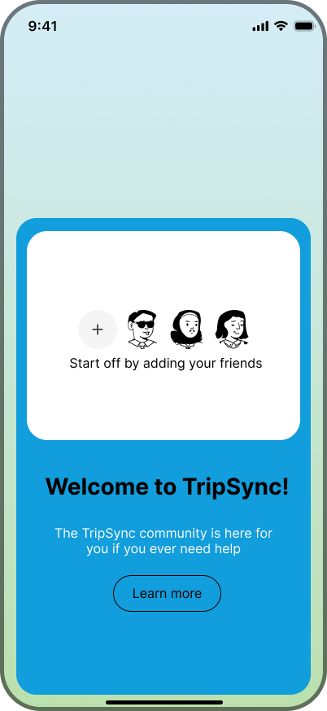

TripSync
 



TripSync makes group travel easy. An all-in-one app that combines itinerary planning, expense tracking, group chats, and memory sharing so you don’t have to juggle a bunch of different tools.
TripSync makes group travel easy. It’s an all-in-one app that combines itinerary planning, expense tracking, group chats, and memory sharing so you don’t have to juggle a bunch of different tools. With an AI-powered travel assistant built right into the chat, TripSync keeps everything organized, helps with planning, and makes sure everyone stays on the same page. It’s designed to take the stress out of managing budgets and coordinating plans, so you can focus on enjoying the trip. Whether you’re splitting expenses or sharing unforgettable moments.
Frequent travelers need a way to stay informed, coordinate plans, and track group expenses, regardless of whether they’re hosting or joining a trip
How might we create a centralized tool that simplifies group trip planning by integrating budgeting, itinerary management, and real-time communication?
Aspects that are most important to a traveller: Sharing memories, collaborating ideas
Biggest challenges: Decision making and accommodating different needs, planning activities around different budgets
Their role: 80% of participants handle itinerary, accommodation, and arrange activities in group travel
Budgeting: 60% of participants said budgeting is somewhat important to them
Budgeting methods: Divide and split after every activity, Communicate with others
Preferred social features: Group messaging, task assignments
Tools: Google Docs, Sheets/excel, Communication Platforms (Texting, Whatsapp, Facebook)